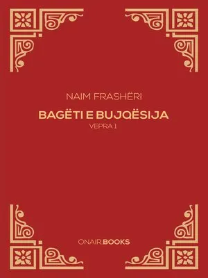

Bagëti e Bujqësia - Vepra e Dytë
Naim Frashëri është një nga poetët më të shquar të letërsisë shqiptare dhe njëri nga ndihmësit më të mëdhenj të rilindjes kombëtare shqiptare. "Bagëti e Bujqësia" është një poezi e tij e famshme, që përmban një fjalim të fortë për bukuritë e jetës fshatare, por gjithashtu i bën thirrje popullit shqiptar për ngritje kombëtare dhe shpresë për një të ardhme më të ndritur.
Temat dhe përmbajtja
"Bagëti e Bujqësija" është një poemë e shkruar nga Naim Frashëri, e cila është një nga veprat më të rëndësishme të letërsisë shqiptare. Kjo poemë trajton tema të ndryshme, por kryesisht përqendrohet në:
- Lavdërimi i natyrës shqiptare:Poema është një himn i bukurive natyrore të Shqipërisë, duke përshkruar me detaje malet, fushat, lumenjtë dhe peizazhet e vendit.
- Përshkrimi i jetës rurale: Naim Frashëri përshkruan jetën e thjeshtë të barinjve dhe bujqve, duke vënë në dukje traditat, zakonet dhe lidhjen e tyre të ngushtë me tokën.
- Shprehja e ndjenjave patriotike:Poema është e mbushur me ndjenja të forta patriotike, ku autori shpreh dashurinë dhe krenarinë për vendin e tij dhe popullin shqiptar.
- Reflektime filozofike dhe shpirtërore: Nëpërmjet vargjeve, autori shpreh mendime filozofike dhe shpirtërore, duke reflektuar mbi kuptimin e jetës dhe lidhjen e njeriut me natyrën.

Një faqe nga poezia "Bagëti e Bujqësia" e Naim Frashërit